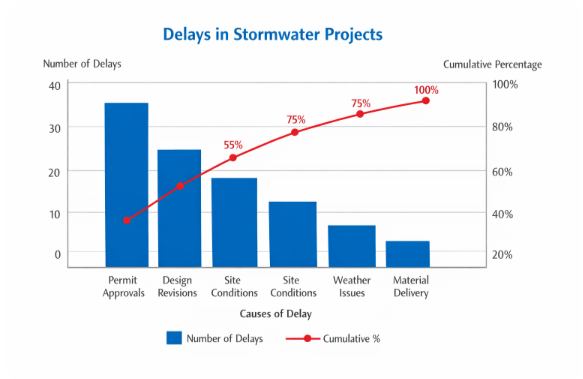
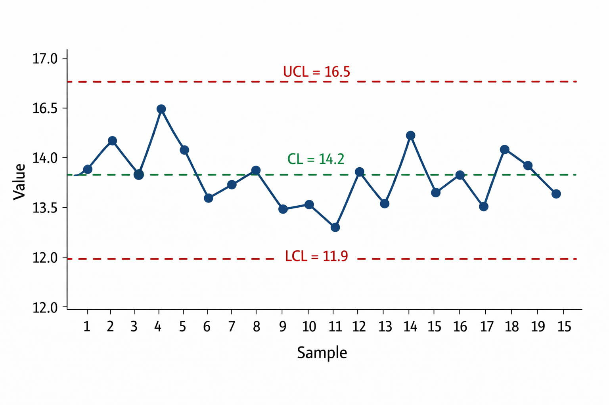

IE492-452 — Dr. Ranky
This assignment focuses on quality control, analysis methods, and modern engineering management tools that support decision-making in project environments. In engineering management, it is not enough to plan and execute a project. Engineers must also analyze performance, identify problems, and continuously improve processes. This is especially important in infrastructure and environmental engineering projects, where errors can lead to long-term economic and environmental consequences. Because of this, project management must include not only planning and scheduling, but also monitoring, quality analysis, and corrective action.
The concepts discussed in this assignment, based on the Kerzner Project Management text and Ranky multimedia materials, include Pareto charts, control charts, fishbone diagrams, visual factory management, root cause analysis, Lean Six Sigma, ISO certification standards, and failure analysis. These methods provide structured approaches to identifying inefficiencies, improving quality, and preventing project failures. The main engineering idea behind these methods is that performance problems can be measured, categorized, and analyzed rather than treated only by judgment or experience. When these methods are used correctly, engineers can identify patterns, determine the most important causes of delay or error, and make better decisions using data.
In the context of NJ GreenFlow Engineering Management, which focuses on stormwater infrastructure, green roofs, pervious pavement, bioswales, and sustainable site design, these tools are essential for ensuring that projects meet performance, environmental, and regulatory requirements while maintaining efficiency and cost control. A stormwater project may appear successful on paper, but if infiltration is inadequate, construction tolerances are inconsistent, or regulatory review creates repeated delay, then the project is not being managed effectively. For this reason, quality and failure analysis methods are valuable in environmental engineering just as they are in manufacturing and industrial systems.
Pareto charts are used in engineering project management to identify the most significant factors contributing to a problem. This method is based on the Pareto principle, which states that approximately 80 percent of problems are caused by 20 percent of the causes. By identifying these key causes, engineers can focus their efforts on the most impactful issues rather than trying to address every possible factor. In project management this is useful because time and resources are limited, so managers must decide where corrective action will create the greatest improvement.
A Pareto chart is typically presented as a bar chart where causes are ranked from highest to lowest frequency or impact. A cumulative percentage line is also included to show how much of the problem is explained as causes are added. For example, if stormwater project delays are analyzed and the causes are permit approvals = 40 delays, design revisions = 25 delays, site conditions = 20 delays, weather issues = 10 delays, and material delivery = 5 delays, then the total number of delays is 100. The cumulative percentages would be 40 percent, 65 percent, 85 percent, 95 percent, and 100 percent. This shows that the first two causes already account for 65 percent of the delays.
From an engineering management perspective, this allows project managers to prioritize improvements where they will have the greatest impact. Instead of attempting to fix all delay causes equally, NJ GreenFlow can focus on improving permitting processes and reducing design revisions, which will significantly improve project timelines. In stormwater infrastructure work, this may mean earlier coordination with municipalities, stronger internal design reviews, and better site data collection before design begins. Pareto analysis is valuable because it turns a long list of project problems into a smaller number of priority issues that can be addressed first.

Figure 1. Pareto chart showing major causes of delay in stormwater infrastructure projects.
Control charts are used in engineering management to monitor process performance over time and determine whether a process is operating within acceptable limits. These charts are commonly used in quality control to detect variations that may indicate a problem. The purpose of a control chart is not only to show values over time, but to help engineers determine whether a process is statistically stable or whether an unusual condition has occurred that requires investigation.
A control chart includes a center line (CL), upper control limit (UCL), and lower control limit (LCL). These values are calculated using statistical methods. The center line is usually the average of the measured data. The upper and lower control limits are commonly written as:
CL = average of measured data
UCL = CL + 3σ
LCL = CL - 3σ
In these equations, σ represents the standard deviation of the dataset. The use of 3σ limits is based on statistical probability, because approximately 99.7 percent of values in a stable process should fall within these limits. Data points are then plotted over time to evaluate process consistency. If values remain within the control limits, the process is considered stable. If values exceed these limits, this indicates an abnormal condition that requires investigation.
In NJ GreenFlow, control charts could be used to monitor performance metrics such as infiltration rates in stormwater systems, construction tolerances for green infrastructure installation, or water quality measurements during inspection and maintenance. For example, if infiltration test values begin to fall below the lower control limit, this may indicate soil compaction, clogging, or improper construction methods. By identifying this early, engineers can take corrective action before system performance is compromised. This makes control charts useful because they separate normal variation from true performance failure, which helps prevent unnecessary adjustments while still identifying real engineering issues.
Fishbone diagrams, also known as cause-and-effect diagrams or Ishikawa diagrams, are used in engineering management to identify the root causes of a problem. The diagram visually organizes potential causes into categories, making it easier to analyze complex issues systematically. Typical categories include materials, methods, equipment, environment, measurement, and people. The purpose of the diagram is not to prove one cause immediately, but to structure the investigation so that engineers consider all possible sources of a problem instead of guessing too quickly.
The structure of the fishbone diagram begins with the main problem at the head of the diagram. From this point, branches extend outward representing different categories of possible causes. Each branch can then be broken down into more specific contributing factors. This method is useful because engineering problems often have multiple contributing factors rather than a single cause. By organizing these causes visually, engineers can better understand how different variables interact and lead to a problem.
In NJ GreenFlow, a fishbone diagram could be used to analyze issues such as poor drainage performance in a stormwater system. Possible causes may include incorrect soil permeability assumptions, improper grading design, construction errors, insufficient maintenance, and unexpected rainfall conditions. If runoff reduction goals are not being met, the diagram helps organize whether the issue comes from the design phase, data inputs, field execution, or environmental conditions. This method is valuable because it improves problem-solving discipline and gives the project team a structured way to examine failure rather than reacting to only the most visible symptom.

Figure 3. Fishbone diagram used to identify causes of poor stormwater system performance.
Visual factory management refers to the use of visual tools and displays to communicate project information, status, and performance metrics. This method helps improve transparency, communication, and efficiency by making information easily accessible to all team members. In engineering management, visual factory ideas are important because many project problems come from poor communication, delayed reporting, or confusion about what the current status of the work actually is.
Visual management tools may include dashboards, progress charts, color-coded schedules, site boards, inspection logs, and performance indicators. These tools allow project managers and engineers to quickly assess project status and identify potential issues without needing detailed reports every time. For example, a color-coded schedule may show whether design tasks, permit reviews, procurement actions, or field inspections are on schedule, delayed, or complete.
In NJ GreenFlow, visual management could be applied to stormwater infrastructure projects by using dashboards to track construction progress, infiltration test results, punch-list items, and environmental compliance metrics. A project board may display whether permitting is complete, whether grading inspections have passed, or whether green roof drainage installation is still in progress. This is valuable because the project team can understand the condition of the job quickly and respond to issues faster. Visual factory management is therefore not only a communication tool but also a control tool that helps reduce delay and improve coordination.
Root cause analysis (RCA) is a structured method used to identify the underlying cause of a problem rather than only addressing its symptoms. This method is important in engineering management because solving only the visible issue does not prevent the problem from occurring again. If a system fails repeatedly and the project team only repairs the immediate damage without understanding why it happened, then the same problem may return later and create more cost, delay, and risk.
RCA involves identifying the problem, collecting relevant data, analyzing possible causes, and determining the root cause using logical reasoning. One common technique used in RCA is the 5 Whys method, where engineers repeatedly ask why a problem occurred until the root cause is identified. For example, if flooding occurred in a stormwater system, engineers may ask why the drainage capacity was exceeded, why the pipe size was too small, why runoff was underestimated, why rainfall data was outdated, and finally why the wrong data source was used.
This sequence shows that the root cause is not only the undersized pipe but the incorrect design data used in the earlier stage of the project. From an engineering perspective, this matters because fixing the pipe alone would solve the immediate symptom but would not correct the underlying design process weakness. In NJ GreenFlow, root cause analysis would be used to investigate failures such as overflow events, infiltration underperformance, erosion around outfalls, or repeated plan revision problems. By identifying the true cause, the company can improve design standards, review procedures, data verification, and coordination practices so that similar problems are less likely to happen again.
Lean Six Sigma is a methodology used in engineering management to improve efficiency and reduce waste in processes. Lean focuses on eliminating unnecessary steps that do not add value, while Six Sigma focuses on reducing variation and improving quality. When these two ideas are combined, engineers can improve both speed and consistency in project work.
The Lean Six Sigma approach typically follows the DMAIC process: Define the problem, Measure current performance, Analyze the causes of inefficiencies, Improve the process, and Control the improved process. This structured approach allows engineers to identify inefficiencies and implement improvements in a systematic way. It is especially useful where the same type of process is repeated often, because the improvement can then be applied across multiple projects.
In engineering projects, Lean Six Sigma helps reduce delays, minimize errors, and improve overall project performance. It is especially useful in projects with repetitive processes or standardized workflows. In NJ GreenFlow, Lean Six Sigma methods could be applied to improve workflows in stormwater design, permitting coordination, modeling, and plan review. For example, if repeated design revisions are slowing project delivery, the company could define the revision problem, measure how often it occurs, analyze whether the cause is incomplete site data or inconsistent review procedures, improve the workflow, and then monitor future projects to ensure the new process remains effective. This is useful because it turns process improvement into a repeatable management method rather than an informal lesson learned.
Modern engineering project management uses a combination of analytical tools, software systems, and data-driven decision-making methods. These methods allow engineers to simulate project scenarios, optimize performance, and improve efficiency. In the past, many decisions were made primarily through experience and manual calculations. Today, modern tools allow more complete analysis before major project commitments are made.
Examples of modern methods include Building Information Modeling (BIM), Geographic Information Systems (GIS), hydrologic and hydraulic modeling, simulation tools, dashboards, and project management software. These tools help engineers visualize project components, analyze system performance, and manage project resources more effectively. Another important aspect of modern project management is the integration of sustainability and environmental considerations into project decision-making. Engineers must consider long-term environmental impacts, resource efficiency, resilience, and regulatory compliance when designing infrastructure systems.
From a systems perspective, these modern methods improve decision quality because engineers can compare alternatives before construction begins. In NJ GreenFlow, modern methods would include the use of hydrologic modeling software, BIM-based site planning, GIS mapping, and stormwater simulation tools such as SWMM or HEC-HMS. These tools allow engineers to evaluate runoff behavior, drainage capacity, infiltration performance, and flood risk under different conditions. By comparing multiple alternatives, the company can select designs that balance technical performance, cost, and sustainability. This is especially important in green infrastructure projects, where long-term environmental performance matters just as much as first cost.
ISO 9001 is an international standard for quality management systems. It provides a framework for organizations to ensure consistent quality in their processes and deliverables. In engineering project management, ISO 9001 focuses on process control, documentation, continuous improvement, and customer satisfaction. The standard is important because it requires organizations to define how work is performed, monitored, and improved instead of relying only on personal habits or informal knowledge.
Implementing ISO 9001 involves establishing standardized procedures, documenting workflows, conducting audits, and continuously improving processes based on performance data. This helps organizations maintain consistent quality and reduce errors. In engineering projects, ISO 9001 certification supports repeatable work processes, which is especially important for projects involving environmental compliance, safety, and regulatory approval. A quality system does not guarantee that no errors will occur, but it reduces variation and makes it easier to detect and correct problems.
In NJ GreenFlow, ISO 9001 principles could be applied to standardize stormwater design procedures, document control, review checklists, submittal tracking, and quality review practices. For example, standardized design and review checklists would ensure that all projects consistently verify runoff calculations, infiltration assumptions, grading details, and permit requirements before documents are delivered to clients or agencies. This improves both quality and accountability because the process becomes repeatable across projects.
ISO 27001 is an international standard for information security management systems. It focuses on protecting sensitive data and ensuring that information is handled securely within an organization. In engineering project management, this standard is important because projects often involve digital design files, client information, GIS data, inspection records, and proprietary engineering models that must be protected from loss, corruption, or unauthorized access.
Implementing ISO 27001 involves identifying potential security risks, establishing security policies, controlling access to information, managing backups, and regularly monitoring system performance. Organizations must also conduct audits and continuously improve their security processes. This is especially important in modern engineering work because project files are often shared across teams, consultants, and clients using digital systems.
In NJ GreenFlow, ISO 27001 principles would be useful for protecting digital stormwater design files, hydrologic models, GIS mapping layers, permit records, and client infrastructure data. Secure document control and controlled access systems would reduce the risk of unauthorized changes or data loss. For a company working on public infrastructure and environmental projects, information security is not only an IT concern but also a project reliability concern because damaged or lost data can affect design accuracy, schedule, and public trust.
Project failure in engineering management is often caused by a combination of technical, managerial, and communication issues. Common causes of project failure include poor planning, unclear project scope, unrealistic schedules, inadequate risk management, weak quality control, and lack of communication between stakeholders. Failure does not always mean the project completely stops. It may also mean that the project finishes late, exceeds budget, does not meet technical requirements, or creates long-term performance problems after completion.
One of the most common causes of failure is insufficient project definition at the beginning of the project. If project objectives, scope, and requirements are not clearly defined, it becomes difficult to manage the project effectively. This can lead to scope creep, cost overruns, and schedule delays. Another major issue is inaccurate or incomplete data. In environmental and stormwater projects, this may include outdated rainfall information, incomplete site surveys, incorrect soil assumptions, or underestimated drainage demands. If the original data is weak, then even a well-organized project can still produce poor results.
Another major cause of failure is communication breakdown between project team members and stakeholders. Engineering projects often involve multiple disciplines, and poor communication can result in design errors, coordination issues, duplicated work, or misunderstanding of regulatory requirements. If information is not transferred clearly between design, review, field execution, and owner approval, then mistakes can spread through the project quickly.
From an analytical perspective, project failure can be viewed as a breakdown in system integration, where time, cost, quality, and performance constraints are not properly balanced. Effective project management requires continuous monitoring, feedback, and adjustment throughout the project lifecycle. In NJ GreenFlow, project failure risks may include incorrect site data, unexpected environmental conditions, regulatory delays, insufficient maintenance planning, or coordination issues between design and construction teams. To prevent these issues, the company would use structured planning methods, regular progress reviews, data verification, and quality analysis tools such as root cause analysis, Pareto charts, and control charts. These practices help ensure that stormwater systems perform as intended and continue to provide environmental benefit over time.
This assignment examined several important engineering management tools used to analyze performance, improve quality, and prevent project failures. Methods such as Pareto charts, control charts, fishbone diagrams, root cause analysis, Lean Six Sigma, and certification systems provide structured approaches to identifying and solving problems in engineering projects. These tools allow engineers to move beyond simple problem identification and focus on understanding which causes matter most, how processes vary over time, and how long-term improvement can be achieved.
Modern engineering management also emphasizes the use of data-driven methods, advanced software tools, and standardized processes such as ISO 9001 and ISO 27001 to improve project outcomes. These approaches help ensure consistency, efficiency, quality, and information security in engineering work. The analytical value of these methods is that they allow project managers to move from reactive problem-solving to proactive control. Instead of waiting for a failure to happen and then reacting to it, engineers can monitor processes, identify trends, and improve performance earlier in the project lifecycle.
In the context of NJ GreenFlow Engineering Management, these methods are especially important for managing stormwater infrastructure and sustainable design projects. By applying structured analysis techniques and quality management practices, the company can improve project performance, reduce risks, and deliver reliable engineering solutions that meet both technical and environmental requirements. This is important because stormwater and green infrastructure decisions affect communities, ecosystems, and long-term resilience, so engineering management must support not only project completion but also lasting performance and public value.
Kerzner, Harold. Project Management: A Systems Approach to Planning, Scheduling, and Controlling. Wiley.
Gido, J., and Clements, J. Successful Project Management. South-Western Publishing.
Sepulveda, J., Souder, W., and Gottfried, B. Schaum’s Outline of Theory and Problems of Engineering Economics. McGraw-Hill.
Ranky, Paul G. Project Management Multimedia eBook and Learning Resources.